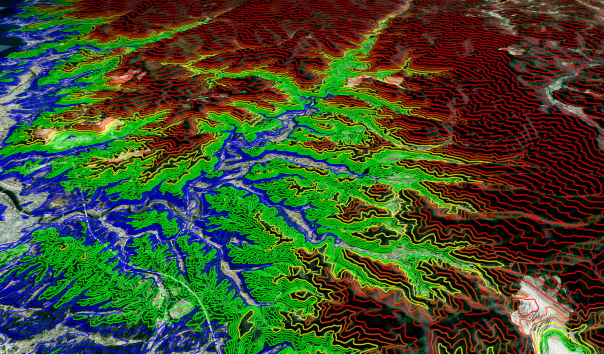
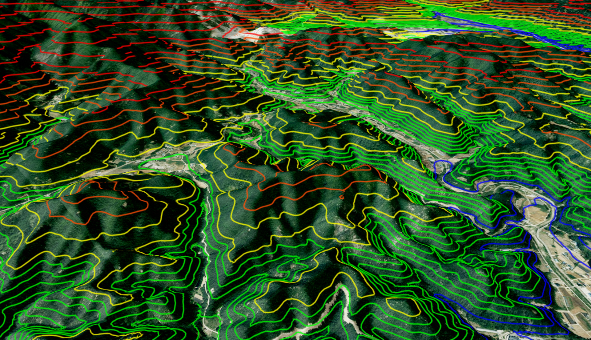
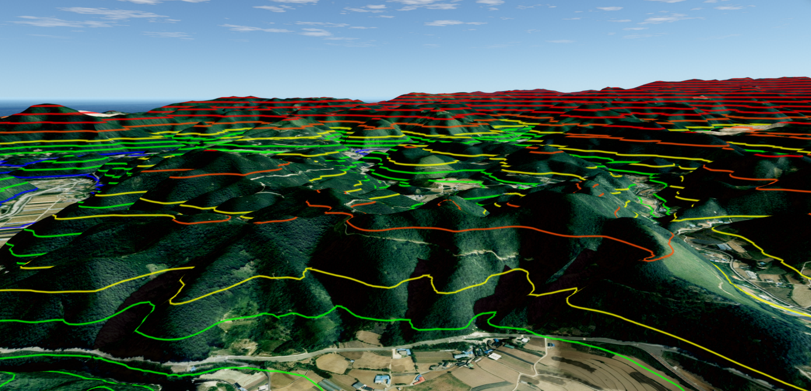
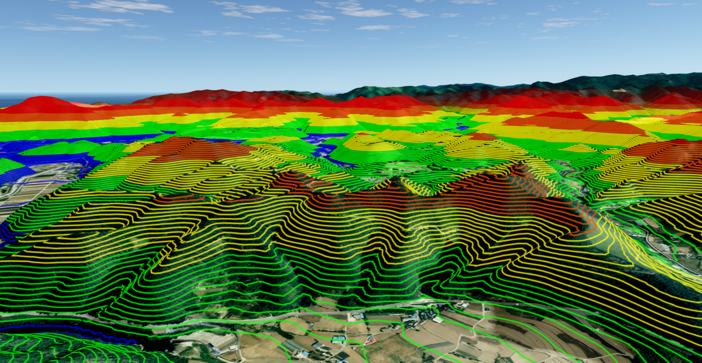
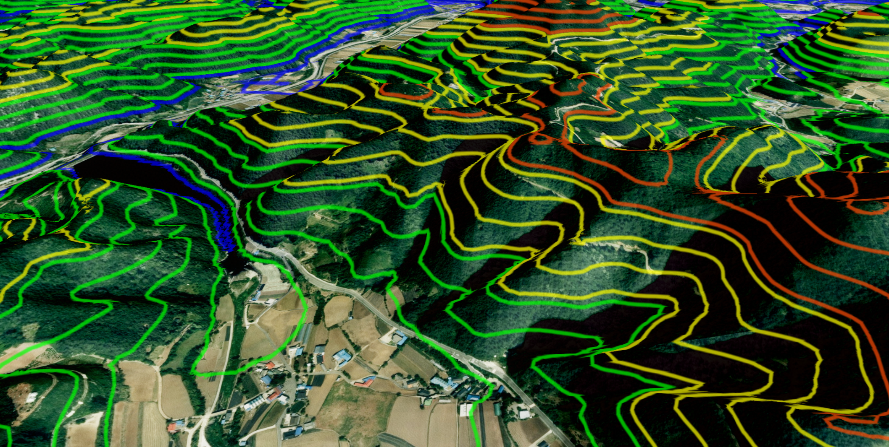
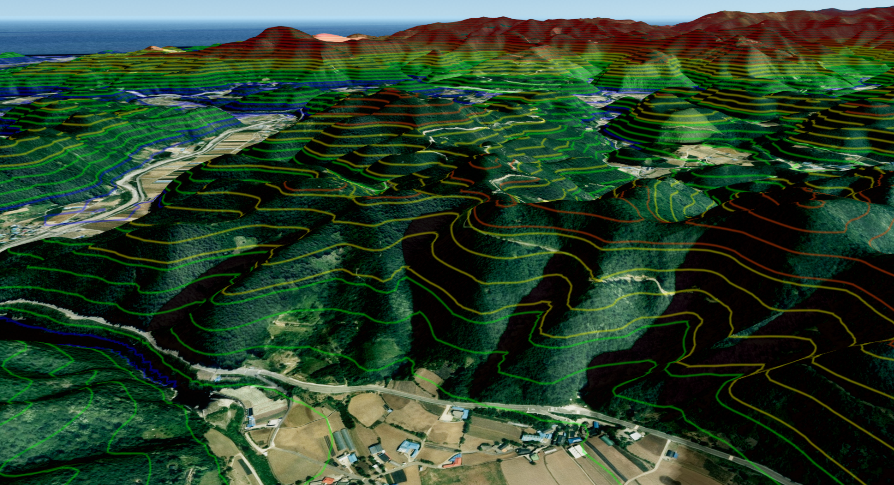
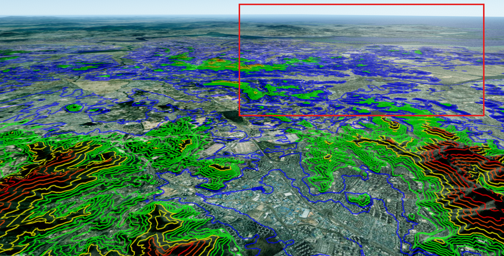
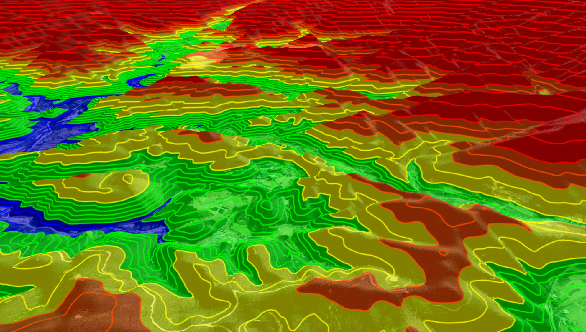

등고선 가시화 시작하기
목차

등고선 가시화는 화면에 렌더링된 지형과 3D 객체의 고도를 일정한 간격의 선으로 표시하는 후처리 기능입니다.UAnalyContour에 선 간격과 스타일을 설정하면 지형의 기복과 객체의 고도 차이를 색상별 등고선으로 확인할 수 있습니다.
이 문서의 예제는 app이 생성되고 초기화된 상태를 전제로 합니다.
지형 타일이나 3D 객체가 화면에 렌더링되기 전에는 분석할 고도 픽셀이 없으므로 등고선이 표시되지 않을 수 있습니다.
1. 등고선 표시하기
app.getAnalysis('Contour')로 등고선 분석 객체를 가져옵니다.
간격과 색상을 설정한 뒤 drawHeight(true)를 호출하면 등고선 후처리가 화면에 적용됩니다.
drawHeight()는 클릭 위치의 고도를 측정하는 active() 상태와 별개입니다.
등고선만 표시할 때는 분석 객체를 클릭 측정 모드로 활성화할 필요가 없습니다.
API
U3dApp.getAnalysis(name) : 이름에 해당하는 분석 객체를 반환하는 함수
매개변수
name(string) : 분석 이름. 등고선 가시화는'Contour'사용. 필수
반환값
return(UAnaly) : 요청한 분석 객체
API
UAnalyContour.setTopoInterval(interval) : 모든 고도에 사용할 기본 등고선 간격을 설정하는 함수
매개변수
interval(number) : 등고선 사이의 고도 간격.0보다 큰 값을 사용합니다. 필수
API
UAnalyContour.setTopoColor(color) : 모든 고도에 사용할 기본 등고선 색상을 설정하는 함수
매개변수
color(ColorRepresentation) : CSS 색상 문자열, 16진수 색상값 또는 THREE.jsColor. 필수
API
UAnalyContour.drawHeight(visible) : 등고선 후처리의 표시 상태를 변경하는 함수
매개변수
visible(boolean) :true면 표시하고false면 숨김. 필수
1. 단일 간격과 색상으로 표시하는 예제
다음 예제는 모든 고도에서 20m마다 청록색 등고선을 표시합니다.
const contourAnalysis = app.getAnalysis('Contour');
if (!contourAnalysis) {
throw new Error('Contour 분석 객체를 찾을 수 없습니다.');
}
contourAnalysis.setTopoStyle([]);
contourAnalysis.setTopoInterval(20);
contourAnalysis.setTopoColor('#00b3b3');
contourAnalysis.setTopoWidth(3);
contourAnalysis.setTopoOpacity(0.85);
contourAnalysis.drawHeight(true);

setTopoStyle([])는 이전에 설정한 고도 구간별 스타일을 비웁니다.
구간별 스타일이 남아 있으면 각 구간의 interval과 color가 기본 간격과 색상보다 우선 적용됩니다.
2. 고도 구간별 간격과 색상 설정하기
setTopoStyle()을 사용하면 고도에 따라 등고선 간격과 색상을 다르게 지정할 수 있습니다.
각 항목의 height는 해당 스타일을 적용하기 시작할 고도이며, 다음 항목의 height 전까지 같은 설정이 사용됩니다.
스타일 배열은 전달 순서와 관계없이 height 오름차순으로 정렬됩니다.
첫 번째 시작 고도보다 낮은 영역에는 첫 번째 스타일이 적용되고 마지막 시작 고도보다 높은 영역에는 마지막 스타일이 계속 적용됩니다.
API
UAnalyContour.setTopoStyle(style) : 고도 구간별 등고선 간격과 색상을 설정하는 함수
매개변수
style(UAnalyContourStyleEntry[]) : 고도 구간별 스타일 배열. 필수style[].height(number) : 스타일이 시작되는 고도. 필수style[].interval(number) : 해당 구간의 등고선 간격.0보다 커야 합니다. 필수style[].color(ColorRepresentation) : 해당 구간의 등고선 색상. 필수style[].opacity(number) : 해당 구간의 투명도. 기본값:1, 허용 범위:0~1
1. 고도가 높아질수록 간격을 넓히는 예제
낮은 지형은 20m 간격으로 촘촘하게 표시하고 높은 지형은 더 넓은 간격으로 표시합니다.
const contourStyle = [
{height: 0, interval: 20, color: '#0000ff', opacity: 0.9},
{height: 100, interval: 20, color: '#00ff00', opacity: 0.9},
{height: 200, interval: 50, color: '#ffff00', opacity: 0.85},
{height: 300, interval: 50, color: '#ff9528', opacity: 0.85},
{height: 400, interval: 100, color: '#ff0000', opacity: 0.8}
];
contourAnalysis.setTopoStyle(contourStyle);


setTopoStyle()은 유효한 height와 interval을 가진 항목만 사용합니다.height 또는 interval이 유한한 숫자가 아니거나 interval이 0 이하인 항목은 제외됩니다.
한 번에 사용할 수 있는 스타일은 최대 256개입니다.
이를 초과한 배열은 경고와 함께 거부되므로 화면 편집 기능을 만들 때도 최대 개수를 제한합니다.
2. 편집 가능한 등고선 설정 만들기
사용자가 구간을 추가하거나 제거할 수 있는 화면에서는 배열 하나를 원본 상태로 관리하고 변경할 때마다 setTopoStyle()에 다시 전달합니다.
화면의 입력 요소만 변경해서는 실제 지도 등고선이 바뀌지 않습니다.
const contourConfig = contourStyle.map(item => ({...item}));
function applyContourStyle() {
contourAnalysis.setTopoStyle(contourConfig);
}
function addContourItem() {
const lastItem = contourConfig[contourConfig.length - 1];
contourConfig.push({
height: lastItem ? lastItem.height + 100 : 0,
interval: lastItem ? lastItem.interval : 100,
color: '#9c27b0',
opacity: 1
});
applyContourStyle();
}
function removeLastContourItem() {
if (contourConfig.length <= 1) return;
contourConfig.pop();
applyContourStyle();
}
3. 선 두께와 투명도 변경하기
setTopoWidth()는 모든 등고선의 화면상 두께를 변경합니다.setTopoOpacity()는 구간별 opacity에 추가로 곱해지는 전체 투명도를 설정합니다.
예를 들어 구간 투명도가 0.8이고 전체 투명도가 0.5이면 최종 등고선에는 두 값이 함께 반영됩니다.
API
UAnalyContour.setTopoWidth(width) : 등고선의 화면상 선 두께를 설정하는 함수
매개변수
width(number) : 선 두께.1이상의 값을 권장합니다. 필수
API
UAnalyContour.setTopoOpacity(opacity) : 모든 등고선에 적용할 전체 투명도를 설정하는 함수
매개변수
opacity(number) : 전체 투명도.0은 완전 투명,1은 완전 불투명. 허용 범위:0~1. 필수
1. 선 두께와 전체 투명도 변경 예제
contourAnalysis.setTopoWidth(5);
contourAnalysis.setTopoOpacity(0.7);


setTopoOpacity()에 0보다 작거나 1보다 큰 유한한 숫자를 전달하면 각각 0과 1로 제한됩니다.
유한한 숫자가 아니면 기존 투명도가 유지됩니다.
4. 카메라 거리에 따라 등고선 감쇠하기
멀리 있는 등고선까지 같은 선명도로 표시하면 화면이 복잡해질 수 있습니다.setTopoFadeDistance()로 감쇠 시작 거리와 표현 종료 거리를 설정하면 가까운 등고선은 유지하면서 먼 등고선을 서서히 투명하게 만들 수 있습니다.
두 거리는 카메라에서 화면 픽셀의 월드 좌표까지 측정한 거리이며 단위는 m입니다.
시작 거리까지는 원래 투명도를 유지하고, 시작 거리와 종료 거리 사이에서 서서히 투명해지며, 종료 거리부터는 완전히 보이지 않습니다.
API
UAnalyContour.setTopoFadeDistance(startDistance, endDistance) : 등고선의 거리별 투명도 범위를 설정하는 함수
매개변수
startDistance(number) : 투명도가 감소하기 시작하는 카메라 거리(m).0이상. 필수endDistance(number) : 등고선이 완전히 투명해지는 카메라 거리(m). 필수
1. 원거리 등고선을 서서히 숨기는 예제
contourAnalysis.setTopoFadeDistance(2000, 80000);

유효한 종료 거리는 시작 거리보다 커야 합니다.
종료 거리를 시작 거리 이하로 전달하면 내부적으로 종료 거리가 시작 거리보다 최소 1m 크게 조정됩니다.
두 값 중 하나라도 유한한 숫자가 아니면 기존 감쇠 설정이 유지됩니다.
5. 등고선 숨기고 분석 종료하기
등고선을 일시적으로 숨기거나 기능을 종료할 때는 drawHeight(false)를 호출합니다.
스타일 설정은 분석 객체에 남아 있으므로 다시 drawHeight(true)를 호출하면 기존 설정으로 표시할 수 있습니다.
contourAnalysis.drawHeight(false);
Height 고도 범례와 Contour 등고선은 같은 고도 후처리 패스를 공유할 수 있습니다.
등고선을 끄더라도 고도 범례가 켜져 있으면 공유 패스는 유지되며, 반대로 고도 범례를 꺼도 등고선은 계속 표시될 수 있습니다.

특정 드론, 경로 또는 Object3D를 등고선 후처리에서 제외하는 방법은 고도 범례 시작하기 - 특정 객체를 범례에서 제외하기를 참고합니다.
제외 대상 설정은 같은 고도 후처리 패스의 범례와 등고선에 함께 적용됩니다.
1. 범례와 등고선을 함께 종료하는 예제
고도 범례와 등고선을 모두 사용했다면 각 분석의 표시 상태를 각각 해제합니다.
const heightAnalysis = app.getAnalysis('Height');
heightAnalysis?.clearExceptObjects();
heightAnalysis?.drawHeight(false);
contourAnalysis.drawHeight(false);